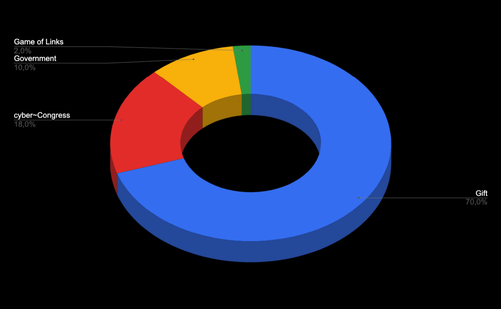
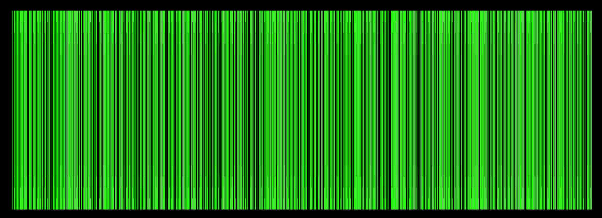
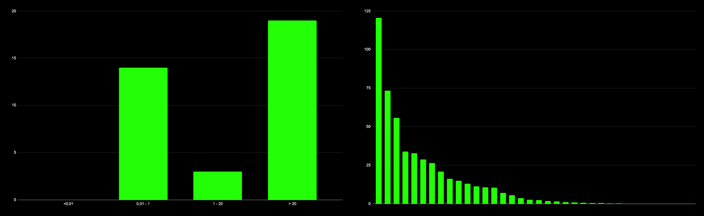
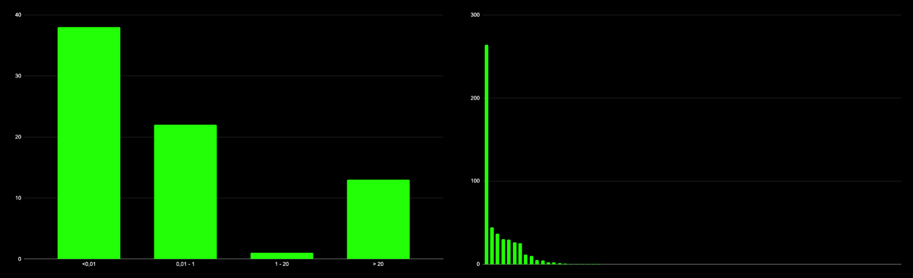
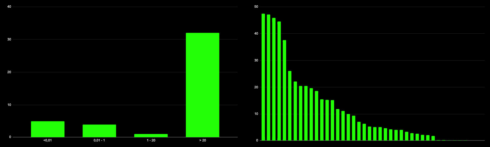
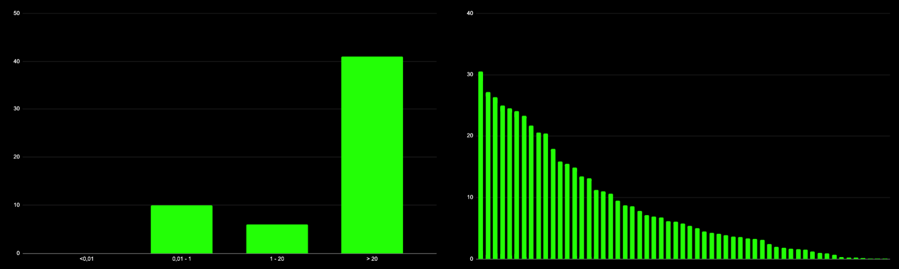
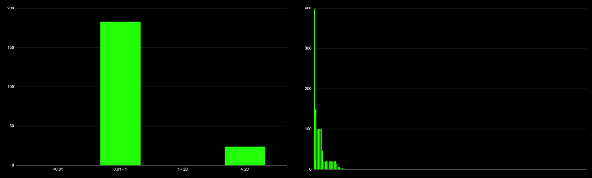
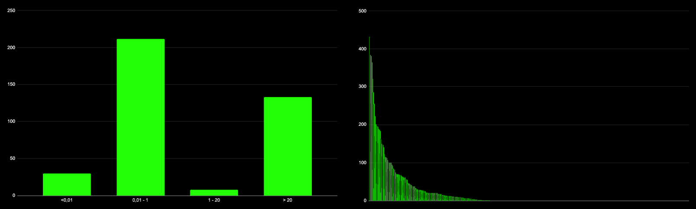

The Game is over. Long live the Game!
by savetheales on 2021-06-17
TL;DR
The Game of Links started at the end of December 2019 and finished on June 11th 2021 at block height 6,200,000 of the euler-6 test network.
There are no analogs out there, known to us, by complexity and the actions covered by the Game. The Game’s had a very simple goal: win as many tokens as possible.
The design of the Game helped to load the network with cyberlinks, showed the value of cyberlinks for the building of the knowledge Graph. The Game helped the project to find devs and partnerships with projects that are critically important for the future development of the knowledge Graph. It helped to find bugs and to clarify future parameters for the network, and finally, it helped to attract community to the project.
One of the goals of the Game involved finding early adopters and distributing tokens to them. Joining the Game didn’t require KYC, face control, captchas, or whatever else. It fully corresponds with the values of cyber~Congress.
For the network, this Game showed possible attack vectors on the knowledge Graph, the real value of cyberlinks and previously unknown bugs. It was also a huge step to understanding in which direction the UI/UX should be built in apps functioning on top of the knowledge Graph.
The distribution achieved just 13.33% out of the desirable, but it was done for by a strong and a quality community. It means that there are more than 20 TCYBs distributed, which are more than 2% of the Genesis supply.
The cyber~Congress team wants to thank each hero and master that joined us on this difficult journey of building the Great Web. We’re ready for the next steps and hope you stay with us.
Intro
The main goal of the participants of the Game of Links was to win as many tokens as possible from cyber~Congress.
The key idea behind the Game of Links was to establish a starting value of relevance for the knowledge graph. It is crucial for getting quality search results from the inception of the network. All the disciplines were an integral part of the preparation and testing of the network before the launch of the bostrom canary network and the mainnet.
The goals were defined with accordance to these key ideas:
To distribute 10% of CYB tokens to the donors that will participate in the takeoff donation round
To distribute up to 5% of CYB tokens to the participants of the 7 disciplines of the game, depending on how many tokens participants win against cyber~Congress
To carry out publicly incentivized testing of go-cyber and cyber~Foundation before the launch of the mainnet.
Anyone could have joined the Game by getting tokens via various available options, such as:
- gift
- takeoff round
- GOL auction
- port
- cyberbot
- bounty campaigns
- getting tokens from the community pool
For the duration of 17 months, we faced bugs, minor distribution issues, and had a few game prolongations. All of these issues were always transparent and were always resolved via submitting network proposals to the community.
The cyber~Congress team appreciates the participation of the community in the network government. We also want to note the awesome increase in daily community involvement due to the Game.
This rest of the report contains the Game of Links statistics, the current distribution, and the conclusion about the Game of Links. Enjoy!
Distribution
The distribution of the Game was depended on the takeoff donation round and was meant to make up 15% of the Genesis supply. The result of the takeoff donation round was 5% of the desired target. This has, obviously, influenced the final distribution: only 12,1 TCYBs out of 100 were won in the takeoff, and just 2 TCYBs out of 38 were won in disciplines depending on the takeoff round.
Minor changes were proposed for the community to the rounds depending on the takeoff disciplines. This was to make their distribution more equal between heroes and masters.
The final distribution of the Game became available after the last block of the game. Here is its summary:
| Discipline | GCYBs available | % supply | GCYBs won | % supply |
|---|---|---|---|---|
| takeoff | 100,000 | 10.00 | 12,141 | 1.21 |
| relevance | 20,000 | 2.00 | 500 | 0.05 |
| load | 10,000 | 1.00 | 500 | 0.05 |
| delegation | 5,000 | 0.50 | 500 | 0.05 |
| lifetime | 3,000 | 0.3 | 500 | 0.05 |
| full validator set | 5,000 | 0.50 | 0 | 0.00 |
| euler-4 rewards | 5,000 | 0.50 | 5,000 | 0.50 |
| community pool | 2,000 | 0.20 | 1,240 | 0.12 |
| sum | 150,000 | 15.00 | 20,381 | 2.04 |
The current distribution is provided below. 70% is a gift, 10% goes for the government (including the community pool and euler~Foundation), 17.96% goes to cyber~Congress (including port, pre-euler fundraisers, inventors, etc.), and 2.04% goes to the participants of the Game of Links:

Disciplines
There were 7 disciplines, that were further subdivided, into 2 different categories: dependent on takeoff donations and independent of takeoff donations.
We will not go into the euler-4 and the full validator set disciplines, because euler-4 has been already described. The full validator set discipline didn’t play out, due to the fact that it didn’t meet the minimal terms required, such as, getting 42 active validators for a period of 10,000 blocks.
Relevance
Let’s start with the most difficult discipline of the Game. This discipline reflects the key idea of the Game of Links - building the knowledge Graph. The relevance discipline shows the top content of the knowledge Graph submitted by its users, which reflects the most important particles in the knowledge Graph for its users. The availability of content is very important, here is why:
Only retrievable CIDs can take part in the Game
To calculate the rewards for this discipline, the top 1000 particles (cids) were tested for accessibility via 3 public IPFS gateways, including ipfs.io. Each cid was tested 10 times, with an average timeout of 360 seconds.
There were 749 particles which responded with live content. The availability signal can be seen on the picture below:

Most (713) particles are .pdf articles on such topics as: physics, math, computer science, biology, bioinformatics, astronomy, medicine, etc.
30 are strings. 5 are pictures. And one is an .md file. The main reason for this, is that the top was made by bots that were launched by masters for crawling and submitting cyberlinks with scientific articles from arxiv.org.
The most ranked CID is the string class. The second place goes to a .pdf article The extremely low-metallicity tail of the Sculptor dwarf spheroidal galaxy. The third place is a string united states.
10 of the top 15 CIDs are an experiment that was provided by groovybear while he researched the knowledge Graph for attack vectors on ranking algorithm.
The first 10 string CIDs, excluding the experiment, are:
“class”, “united states”, “city”, “japan”, “canada”, “property”, “thing”, “england”, “list of latin words with english derivatives”, “united kingdom”.
All the top pictures are photos from cyber Academy events.
There were 36 unique addresses that took a part in the discipline. The rewards distribution and the histogram are provided below:

The amount of users that got less than 20 GCYBs is almost equal to the amount of users that got more than 20. The 1st place was won by a landslide. It means this address holds the most particles in the top. The distribution looks like that of the power law, which seems expected.
The main conclusion from this discipline is that cyberlinks have to be expensive. This will lead to improving the quality of the knowledge Graph, and will defend the knowledge Graph from these types of attacks by bots and other attacks in general.
Load
This discipline was created to load the network with cyberlinks from different nodes for monitoring the network behavior on different loads. Due to this, we detected a critical bug during high load periods.
After we have discovered this bug, the continuations of the discipline carried no logic for the development of the network or the Graph. The community voted on closing this discipline on block height 3,638,501 by text proposal #28.
For calculating rewards, a script was provided that collected all the cyberlinks from block heights 1 to 3,638,501.
The karma for cyberlinks was changed from 0 to 4, according to the network load. Note that values corresponding to 0 were changed to 1 by the script, because a 0 value is impossible. It was a minor bug in the network API that was fixed in the reward script.

There are 74 unique addresses that took part in this discipline. The result is less beautiful than before, because one address was linking like it was possessed. Some addresses tried to catch up and get a piece of the pie, but the result is what is expected. More than one-half of the reward went to the crazy linker :)
The load discipline wasn’t bringing a lot of value to the knowledge Graph, but the value was achieved from load-testing the network IRL.
Delegation and Lifetime
Those disciplines were about earning your validators’ reputation by having an efficient infrastructure and providing a constant lifetime. This worked as a promotion of your services to the early community. They are grouped in one section because they bring similar values.
All the calculations are based on cyberindex-euler indexer. Also, it should be noted that the lifetime discipline includes not just precomits from euler-6, but also the precomits from euler-5, according to the migration protocol.

There were 42(!) validators that took part in the delegation discipline. 32 validators got more than 20 GCYBs, another 10 got less, because they were unbonded for most of the time the network run. Nice distribution, no comments.

There were 57 validators that took part in the lifetime discipline during euler-5 and euler-6. 41 validators got more than 20 GCYBs.
The different amount of validators, in comparison with the delegation discipline, comes due to the fact that some operators changed the operator address or operators stopping to support the next version of the network.
Anyway, delegation and lifetime disciplines have the most beautiful distribution pictures. The cyber~Congress team appreciates all the responsible validators for that.
Community pool
During the euler testnets, we expected some experiments with governance from the community. All the governance decisions of the community pool spend proposals that took part during the testnet, will be migrated to bostrom and cyber networks.
This discipline is responsible for partnerships between the knowledge Graph and the Confio team, the Keplr team, Citizen Cosmos and the Cosmos-cap. Those partnerships have and will bring long term value to the future development of the Graph.
The cyber gift research that was developed by groovybear really improved the drop mechanisms for different types of blockchain communities.
A lot of community members came to the fuckgoogle community because of the evangelism program by Citizen Cosmos and a bit less from the bounty video program by POSTHUMAN.
At the moment of calculating the rewards, the cyber~Congress team decided to add additional 0.01 GCYB to each address with reward less than 1 GCYB, to provide availability to link in future networks.

There were 207 agents that took part in the community pool discipline. The distribution is uneven, due to its nature. The addresses fall into two groups:
- Group with the agents who brought a significant value to the project (groovybear, Ethan from Confio, Keplr team, Citizen Cosmos etc.)
- Bounty hunters group
GOL holders
Token holders accepted a proposal to allocate tokens of bostrom and cyber on 1 to 1 proportion for ERC20 GOL token holders.
This option will be available for claiming as soon as bridges will be developed. As a result, GOL holders can change their tokens to network tokens on 1 to 1 basis and vice-versa, if and when, tokens are available in the bridge liquidity pool.
Port
For the visitors of the Port, a migration protocol was prepared.
Port will be working with pre-bostrom, bostrom, and cyber networks and any port visitor will get tokens of the current network according to the port distribution rules. Port will be launched on any network, as soon as the software be able to send tokens.
All port visitor addresses up to ETH block height of 12,611,508 (~6,200,000 in euler-6 network) will be pushed to the pre-bostrom Genesis file. As soon as the port will be opened in the new network, all the newcomers (transactions after 12,611,508 block height on ETH) will start to receive their tokens. This protocol is true in future migrations by the snapshot selected on ETH block.
At the current moment, more than 500 ETH were donated, which make up the project’s market cap to be 458019 ETH.
Conclusion
Distribution in PoS networks is a complex issue. The distribution games should always strive to be a part of future networks development. The Game of Links was the first game with such complexity to our knowledge. Not all things went as expected, but this Game is a good example of how distribution should go, according to principles and values of open source and blockchain communities, such as transparency, trustless execution, privacy, etc.
For the network, this Game showed possible attack vectors on the knowledge Graph, the real value of cyberlinks and previously unknown bugs. It was also a huge step to understanding in which direction the UI/UX should be built in apps functioning on top of the knowledge Graph.
The distribution achieved just 13.33% out of the desirable, but it was done for by a strong and a quality community. It means that there are more than 20 TCYBs distributed, which are more than 2% of the Genesis supply.

There were 383 addresses that took part in the Game of Links (424 if we include the takeoff discipline). Unfortunately, 30 addresses got less than 1 MCYB, but in general the distribution happened in accordance with the agent’s activity.
The cyber~Congress team wants to thank each hero and master that joined us on this difficult journey of building the Great Web. We’re ready for the next steps and hope you stay with us.
fuckgoogle!
Points of truth
| IPFS hash | Description |
|---|---|
| QmZnA4JwyAMtcRtjtvg6SFczviDUfHsqy5FSUA1Spr8efk | community pool discipline rewards |
| QmXGyyCZY4aSzxaUsj7xZEjLNH7ExrujcZ7HvTCrhYWNYd | delegation discipline rewards |
| QmVbf9faMiQonTc8zSpEpdTzmH1Wk6Fi1am5cKHQptBQeG | euler-4 lifetime rewards |
| QmTW8zxijABvfZzhVQThPZkesSjktMUo67ySUNMge9o1ya | lifetime discipline rewards |
| QmRRDEC2Bjnv1epRTkxaPgtunQM8wskADhj9xPQdk91mSB | load discipline rewards |
| QmdfktVx9jpRx45WTAW9YkfbVijr2pC1AyvuhcS2bSgULk | euler-5 precommits |
| Qma68UufdASfgkAAx6BZUHeALxZaqhTKrmwKady5BUbXhG | relevance discipline rewards |
| QmcoskaGEXGg39YUs7giRBQCrnKpEqt4Pci8DWHWNxtevj | responces of top 1000 |
| QmRH5osMUyjCt9xY1ypvwbxdoMpVExC76XuN2ACwFLZrEN | takeoff results |
| QmZzWmSDcDYz7AwWkRssjfFRFWTGdvF4oWZQUsRzyFNKCo | pivot table of final results |
| QmSVDQbWkqfE5NP5H6Vpw1oAcsAMYSw9n8c6UjAQogdpeR | port reults on ETH block # 12,611,508 |
References
- go-cyber github repo
- cyber~Foundation github repo
- Takeoff result post
- Proposal #33. Minor distribution changes
- Cybergift github repo
- The script for relevance rewards calculation
- The cybergraph attack experiment github repo
- The critical bug issue
- Proposal #28. Closing load discipline on block height 3,638,501
- The script for load rewards calculation
- Indexator for euler-6 network github repo
- euler-5 -> euler-6 migration protocol
- Confio official website
- Keplr official website
- Cosmos market capitalization aggregator
- Evangelism program github repo
- Proposal #21. Update of Genesis distribution